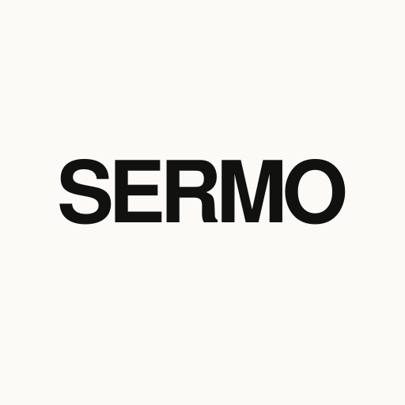
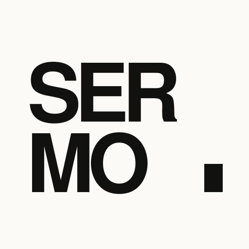
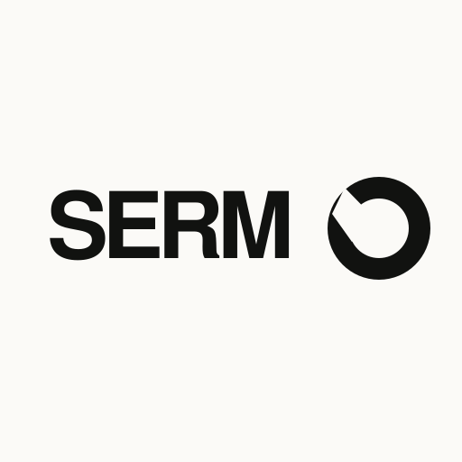
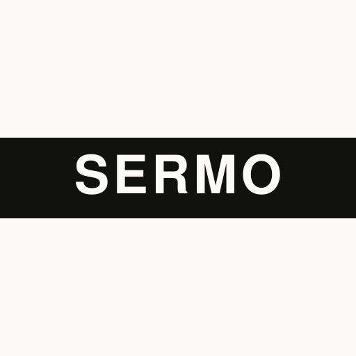
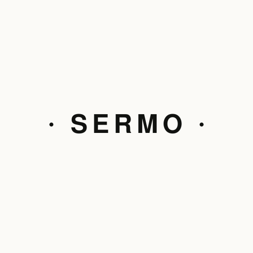

Monument / 纪念碑
01最接近高级时装语汇的一案。极紧字距、强横向张力，像建筑铭牌一样稳定，不依赖任何图形说明自己。
PRIMARY WORDMARK · 稳重 / 直接 / 长寿
从高级时装的克制字标出发，把“说话”做成一种空间，而不是一个聊天图标。白底、近黑、正方形；真正的识别来自比例与沉默。
不是字重微调，而是五种不同的品牌性格。

最接近高级时装语汇的一案。极紧字距、强横向张力，像建筑铭牌一样稳定，不依赖任何图形说明自己。

SER 与 MO 分成两次发言，右下实心块是等待输入的游标。更年轻，也更适合应用图标。

让 O 留下一道入口：既是嘴形，也是一个尚未结束的谈话。品牌含义藏在字母内部，而不增加图标。

像书脊、刊头和服装织标。黑色横带把 SERMO 变成内容世界里的分类索引，适合启动页与运营物料。

不是更大声，而是更有余地。两点标记谈话的两端，中间的 SERMO 像一句被认真听见的话。
同一图形分别以 64 / 32 / 16 px 显示。
如果 SERMO 要成为一个长期品牌，首选 01 作为主字标，02 作为应用图标；如果只保留一枚正方形标志，02 的独立识别最强。